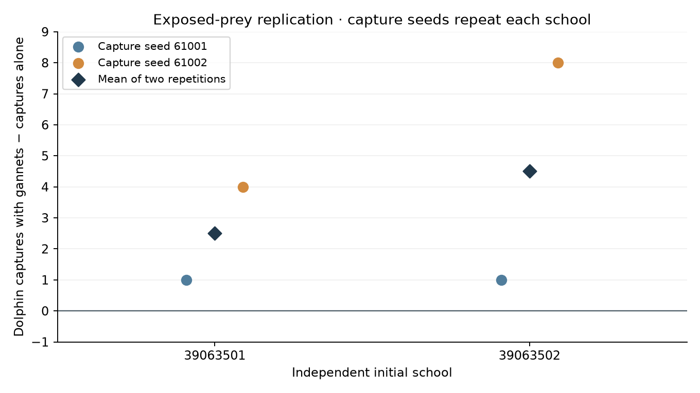
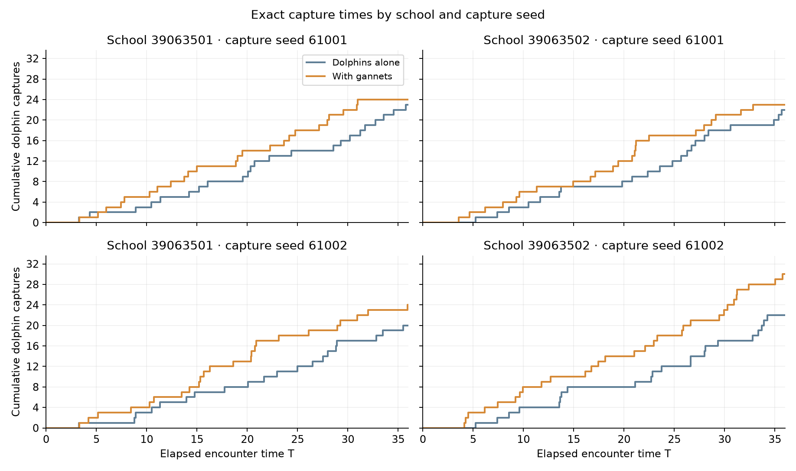

The positive feeding difference reproduced in all four paired repetitions across the two fresh initial schools. This supports follow-up on the exposed-prey policy under the stated assumptions; two schools do not establish statistical significance or long-term cooperation.
8 of 8 declared encounters and 4 of 4 matched pairs passed read-only analysis. The design has 2 independent initial schools, each repeated with capture seeds 61001 and 61002. The four paired repetitions are not four independent schools. Each completed case starts with 160 fish and 12 dolphins, adds either zero or three gannets, and runs for 36T (28,800 native steps).
The exposed-prey dolphin controller and global gannet controller are byte-identical to the preceding simple-cycle pilot. Fresh schools were prepared and screened without predators; checkpoint and native-code hashes are verified. The previous two development schools motivated this replication and remain separate exploratory results. Their captures are not pooled into this report.
Every comparison matches the same initial school, dolphin policy and private capture/tie streams, with gannet presence as the treatment difference. Different capture seeds repeat a school under different stochastic streams. Difference = dolphin captures with gannets minus dolphin captures alone. Percentage change is undefined if the alone count is zero.
| Initial school | Capture seed | D food alone | D food with G | Difference | Change % | G food |
|---|---|---|---|---|---|---|
| 39063501 | 61001 | 23 | 24 | 1 | 4.348 | 7 |
| 39063501 | 61002 | 20 | 24 | 4 | 20.000 | 11 |
| 39063502 | 61001 | 22 | 23 | 1 | 4.545 | 5 |
| 39063502 | 61002 | 22 | 30 | 8 | 36.364 | 9 |

| Initial school | Paired repetitions | Mean D food alone | Mean D food with G | Mean difference | Stream-specific differences |
|---|---|---|---|---|---|
| 39063501 | 2 | 21.500 | 24 | 2.500 | 61001: +1; 61002: +4 |
| 39063502 | 2 | 22 | 26.500 | 4.500 | 61001: +1; 61002: +8 |
Each school average is calculated from its matched stream repetitions. The summary below pools captures descriptively and reports an equal-weight mean of school differences only when each included school has both repetitions. It supplies no p-value, confidence interval or claim of four independent school replicates.
| Independent schools | Paired repetitions | Pooled D food alone | Pooled D food with G | Pooled difference | Mean school difference | Positive repetitions |
|---|---|---|---|---|---|---|
| 2 | 4 | 87 | 101 | 14 | 3.500 | 4 |
| School | Capture seed | Actors | D food | D launches | D contacts | Food / launch | Proximity: dolphin-T | Minimum pre-strike T | Mean selected neighbors |
|---|---|---|---|---|---|---|---|---|---|
| 39063501 | 61001 | D | 23 | 48 | 33 | 0.479 | 115.268 | 2.000 | 1.312 |
| 39063501 | 61001 | DG | 24 | 57 | 34 | 0.421 | 137.716 | 2.000 | 0.579 |
| 39063501 | 61002 | D | 20 | 54 | 32 | 0.370 | 123.495 | 2.000 | 0.833 |
| 39063501 | 61002 | DG | 24 | 60 | 34 | 0.400 | 139.988 | 2.000 | 0.550 |
| 39063502 | 61001 | D | 22 | 47 | 30 | 0.468 | 118.801 | 2.000 | 0.936 |
| 39063502 | 61001 | DG | 23 | 54 | 31 | 0.426 | 117.140 | 2.000 | 0.259 |
| 39063502 | 61002 | D | 22 | 46 | 27 | 0.478 | 110.524 | 2.000 | 1.043 |
| 39063502 | 61002 | DG | 30 | 61 | 36 | 0.492 | 128.466 | 2.000 | 0.459 |
Qualifying proximity integrates committed start/reset/launch records and any remaining clock at encounter end, summed across dolphins at native-timestep resolution. Phase-based containment and attack durations are separately exported. Food per launch counts real removals; a selected fish is not automatically captured, and physical contact can capture a different fish during a bout. Food per dolphin per T uses the full elapsed encounter including herding and recovery.

| Assumption | Model choice | Interpretation |
|---|---|---|
| Herding and attack cycle | 2T of continuous proximity to observed prey within radius 4.5, then one feasible strike and handling/recovery. | Proximity is a local-pressure proxy; it does not certify that the school has been compressed. Losing proximity resets the clock. |
| Exposed-prey preference | Among feasible prey, prefer the fewest neighbors within radius 2; break ties with predicted intercept effort and distance. | Dense prey remain eligible. There is no added density penalty to capture success and no direct post-dive permission bonus. |
| Gannet observation and targeting | Full view of underwater fish within the existing depth limit; DBSCAN radius 2/minimum neighborhood 4; accessible-count-weighted cluster choice and a dense target within it. | Full view and the cluster rule are model assumptions; ordinary physical depth, movement, contact and recovery limits remain. |
| Capture success | 0.7 conditional on an oral-contact event for both predator species. | This is not a per-dive or per-pursuit success probability. Field attack-level percentages do not directly calibrate it. |
| Time and encounter size | 36 model time units, 160 initial fish, 12 dolphins, and either zero or three gannets. | Model time is not calibrated to real seconds here; long-term persistence and other pod sizes are not tested. |
| Replication scope | Two fresh initial schools, each under two capture seeds; frozen behavioral code and parameters. | The repetitions test sensitivity to stochastic streams within a school and do not create four independent initial schools. |
Herding is collaboration within the dolphin pod. A positive paired difference indicates simulated facilitation of dolphin feeding by gannet presence under these assumptions. Reciprocal benefit additionally needs an appropriate gannet-only comparison. These runs do not establish numerical convergence, empirical calibration or long-term cooperative stability.
43 dives supply descriptive same-survivor response summaries from 0.5–1.5T after entry with at least four survivors. The response CSV keeps school and capture-seed identifiers. Simultaneous dolphin and fish motion prevent treating those before/after samples as isolated causal dive effects.
Included case seals, source freezes, prepared-checkpoint provenance, original accounting/private-stream receipts and unique native prey removals passed. Physical fish and dolphin starts match across stream repetitions; private streams match within each presence pair and differ between capture seeds. Every actual dolphin launch matches a committed cycle launch after at least 2T continuous qualifying proximity, with the lowest recorded feasible neighbor count. Analysis performs no native model steps.
All paired repetitions · Independent-school averages · Case and cycle diagnostics · Descriptive pooled totals · Bird responses · Audit · Representative school 39063501 / capture seed 61001 replay